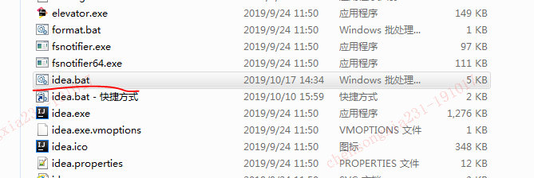
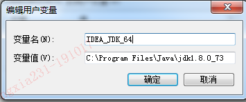

本来开发工具安装的是IDEA2018，有天用着用着突然崩溃了，重启后死活用不了。心血来潮下载了2019版本，顺利安装完，但是点击快捷方式启动的时候一直没反应。后来咨询同事，在下面的启动脚本中找到了“秘密”。

上面的idea.bat文件是idea windows版本的启动脚本，具体内容就不说了，大家可以自己看下。
添加环境变量IDEA_JDK_64

添加好后就能顺利启动IDEA 2019了。